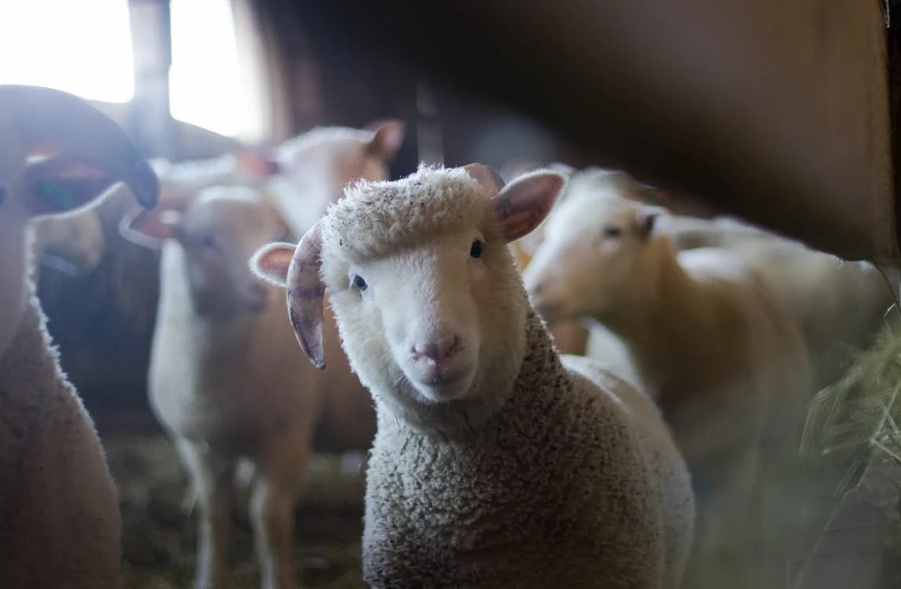
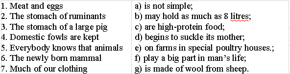

Lesson 7
UNIT 2
My specialty is techologist
BASIC LIVESTOCK PRODUCTION

Farm animals
Learn the active vocabulary of the Lesson and be ready to
use it in your further work:
Barn
n – корівник,
стайня; body
n – тулуб,
тіло,
труп; branch n – галузь; breed
n, v – порода; розводити; cattle-pen
n – загін, кошара (для овець); cattle-plague
n – чума рогатої худоби; clothing
n – одяг; conserve
v – зберігати,
берегти; consider
v – вважати; employ
v – використовувати; except prep – крім, за винятком; exception
n – виняток; fodder
n – корм,
фураж; fowl
n – птиця; fur
n, a – хутро;
хутряний; furnish v – постачати, надавати; honey n – мед; improve
v – удосконалювати; in
a proper way – належним чином; lorry
n – вантажівка; make
up v – складати; mule n – мул, осел; national economy – народне господарство; perform v – виконувати, здійснювати; plot n – земельна ділянка; portion n – частка, порція; power n – сила, енергія, влада; prevent
v – запобігати; private
a – приватний; production
n – виробництво,
продукція; raise
v – підвищувати,
вирощувати; restore
v – відновлювати,
відтворювати; skin
n – шкіра,
шкура; supply n,
v – постачання; постачати; valuable а – цінний; yield n – продуктивність, урожай; animal
breeding – тваринництво; animal
husbandry – тваринництво.
Read
and translate the text:
FARM
ANIMALS Farm
animals belong to the large group of animals known as vertebrates, or animals
with a backbone. Fishes, birds and mammals all have a backbone and are
vertebrates. But most of the ordinary farm animals with the exception of poultry
belong to the class of mammals, that is animals which suckle their young.
Some
of the farm animals, such as cattle and sheep, ruminate, while others do not. In
ruminants the stomach is not simple, as in the pig, but consists of four parts.
Farm
animals serve man by furnishing him food, clothing and supplying many other
necessary products and services. Some parts of animal bodies, such as skins,
wool, furs, feather, bones, are valuable raw materials for various industries.
The meat we eat is furnished largely by cattle, sheep, swine and poultry (fowls,
geese, ducks, turkeys etc.). We get honey from bees. Much of our clothing is
made of wool from sheep. Horses,
mules and oxen have been used by man for many kinds of work, although much of
the work formally done by farm animals is now performed by tractors, lorries and
other machinery. Animal
breeding and animal husbandry are important mainstays of agricultural sector.
The purpose of farm animal husbandry is first and foremost to produce food such
as milk and meat, and to obtain animal products such as wool, hides or pelts.
Targeted animal breeding helps to maintain both animal performance and animal
health in the long term. Economic
conditions and consumer expectations, which have risen greatly in recent years,
exert a great influence on animal husbandry as well as the legislation governing
animal welfare and environmental protection. It is extreemly important to
receive different financial assistance options to support science and industry
in developing husbandry methods to bring about improvements regarding animal
welfare, environmental impact, occupational health and safety, and
competitiveness.
GRAMMAR
EXERCISES
I. Answer the following questions:
1.What
group of animals do we call vertebrates? 2.What
ruminant animals do you know? 3.What
can you tell about the stomach in ruminants? 4.How
do farm animals serve man? 5.What
is the meat we eat furnished by? 6.What
for horses, mules and oxen have been used by man? 7.What
is purpose of farm husbandry? 8.Why
is it important to receive different financial assistance options?
II. Find An extra
word: 1.Horses,
mules, oxen, pigs, sheep, tractors, cattle; 2.Geese,
ducks, swine, turkeys, fowls; 3.Fat,
butter, honey, horns, milk, sour-cream, meat; 4.Goats,
sheep, cattle, fowls. A common
word: 1.Bones,
feather, furs, skins, wool, products, meat, milk; 2.Fishes,
mammals, vertebrates, birds, reptiles; 3.Animals,
buffalo, kangaroo, rabbit, nutria, mink; 4.Stomach,
skin, heart, horn, hair, parts of a body, head, wool.
III. State to what part of speech each word belongs and
translate:
Attachment,
treatment, activity, direction, movable, fattening, supplier, material, growth,
general, measurable, reduction, directly, controller, damageable, condition,
domestic, formerly, management,
necessary, pasture, economic, environmental, protection, competitiveness,
different
IV. Translate the words with negative prefixes in-(im-):
Incorrect,
inactive, inorganic, imperfect, incomplete, indirect, immeasurable, immovable,
inactivity, immature, immoderate, implant, inorganic,
insufficient.
V. Translate into Ukrainian:
1. Mammals are animals that produce milk for their young.
2. Clothing is often made of animal products. 3. The backbone consists of bones,
which are joined together along the back. 4. Skins, wool, fur, feather, bones
and other parts of animal bodies are valuable raw materials for various
industries. 5. Animals cannot live without food. 6. The stomach of ruminants is
not simple, as in the pig. 7. Last year the farm began to raise turkeys. 8.
Vertebrates are much better known, but are much fewer in number than
invertebrates.
VI. Make up sentences and translate
them:
 VII.
Agree or disagree with the statements:
Model A:.Mammals
are the animals which suckle their young. Do you agree with me? Yes,
you are quite right. Mammals are the animals which suckle their young.
Model
B:
Farm animals belong to the group of invertebrates. Am I right? No,
you are wrong. Most farm animals belong to the group of vertebrates.
1.Cattle
and sheep are ruminate. 2.In
ruminants the stomach is simple. 3.The
eggs we eat are furnished largely by chickens. 4.Much
of our clothing is made of feather from fowls. 5.Much
of the work is now performed by tractors, lorries and other machinery.
VIII.
Translate into Ukrainian the following word-combinations:
Animal
life, grain crops, poultry farm, animal products, milk yield, beef cattle,
bee-hive, pig production, fish farming, milk farm production, silver-fox farm,
farm house, farm-hand, zoo keeper, cattle-dealer, cattle-pen, cattle-plague,
cattle-ranch, cattle breeder, farm animals breeding, live-stock breeding.
IX. Translate into English:
1.Хребетні підрозділяються на риб,
птахів,
ссавців та інші класи тварин.
2.М’ясо,
що ми їмо, в основному, постачається великою рогатою худобою, вівцями, свинями
та птицею. 3. Більшість нашого одягу виготовляється із вовни овець. 4. Коні та
бики завжди використовувалися людиною для багатьох видів робіт. 5. Більшість
сільськогосподарських робіт зараз виконується тракторами та іншою технікою. 6.
Перед тим, як подоїти, корів нагодували. 7. Перші одомашнені тварини
використовувалися людиною для м’яса та шкіри. 8. Новий корівник (barn) буде
побудований наступного року. 9. Нашій лабораторії незабором надішлють нове
обладнання. 10. Цей закон обговорюється зараз нашим урядом.
X.
Fill in the blanks using the adjectives in brackets: (Proud,
fast or quick, sly, angry or mad, gentle, wise, free, slow, graceful, hungry,
stubborn, silly, busy, playful); Model: 1.Playful
as a kitten. 1.(
… ) as a kitten; 2.(
… ) as a mule; 3.(
… ) as an owl; 4.(
… ) as a fox; 5.(
… ) as a turtle; 6.(
… ) as a bee; 7.(
… ) as a rabbit; 8.(
… ) as a lamb; 9.(
… ) as a goose; 10.(
… ) as a swan; 11.(
…. ) as a wolf; 12.(
… ) as a bull; 13.(
… ) as a peacock; 14.(
… ) as a bird. XI.
Choose the correct word: 1.Sheep
farmers in Australia have constant wars against ____________. a)
dingoes; b)
kangaroos; c)
buffaloes; d)
rabbits. 2.Farm
animals belong to the large group of _______________. a)
invertebrates; b)
vertebrates; c)
reptiles; d)
grains. 3.In
ruminants the stomach consists of ____________ parts. a)10;
b)4;
c)2;
d)3.
4.Farm
animals serve man by furnishing him ________________. a)
oxygen and nitrogen; b)
magazines and newspapers; c)
food and manure; d)
TV and computers. 5.Some
of the animals such as ________________ruminate. a)
wolves and foxes; b)
toads and lizards; c)
monkeys and crocodiles; d)
cattle and sheep. 6.Some
parts of animal bodies, such as ___________________ are valuable raw materials
for various industries. a)
feather and bones; b)
tails and teeth; c)
wool and furs; d)
eyes and ears. 7.The
meat we eat is furnished largely by________________. a)
pigeons and sparrows; b)
bees and butterflies; c)
tigers and lions; d)
cattle and swine. 8.We
get honey from_________________. a)
butterflies; b)
bees; c)
geese; d)
bears. 9.Much
of our clothing is made of___________________. a)
feather; b)
horns; c)
milk; d)
wool. 10.Horses,
mules and oxen have been used by man for_________________. a)
carrying burdens; b)
writing letters; c)
hatching out eggs; d)
educating children. 11.Much
of our shoes is made of _______________. a)
skin from animals; b)
wool from sheep; c)
skin from snakes; d) eagles from hedgehogs.